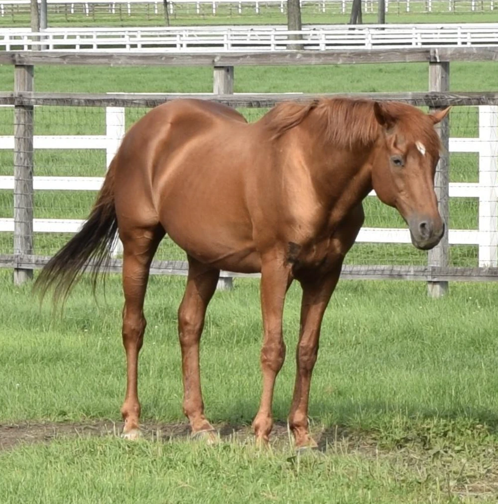

“In 1999, Takarazuka Kinen. His target was only one, the same age Derby horse. Now, or yet? No, it is now. The unidentified chestnut changed the future by a moment decision. That horse's name is ―― Grass Wonder.”
―2012 JRA TV commercial

Grass Wonder
Grass Wonder was an American-bred Japanese-trained Thoroughbred racehorse and sire. In a racing career which lasted from 1997 until 2000 he won nine of his fifteen races including four Grade I races. He was the leading juvenile colt in Japan in 1997 when he was unbeaten in four races, culminating in a victory in the Asahi Hai Sansai Stakes. He missed most of his second season with injury problems but returned in autumn to win the Arima Kinen. He reached his peak as a four-year-old when he won the Takarazuka Kinen and a second Arima Kinen. He failed to win in three races in 2000 and was retired to stud. He had some success as a breeding stallion.
Quick Trivia
- "Grass" is his owner Hanzawa's crown/clan name, comes from his brother's horse Green Grass. His sister Wonder Again is also a two-time G1 winner in USA.
- In his late days, he liked eating dandelions. Grass Wonder's VA Rena Maeda found it when she visited him. Fanarts often depict it.
- In 2021, his great-grandson Pixie Knight won the Sprinters Stakes, earning a G1 win for the fourth generation of Grass Wonder's bloodline. (Grass Wonder sired Screen Hero, who sired Maurice, Pixie Knight's father).